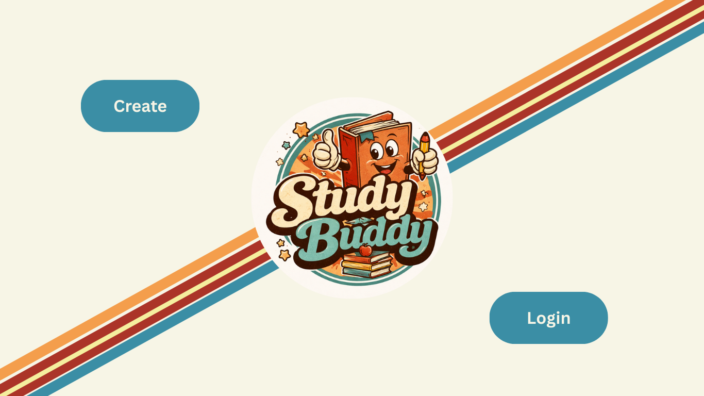
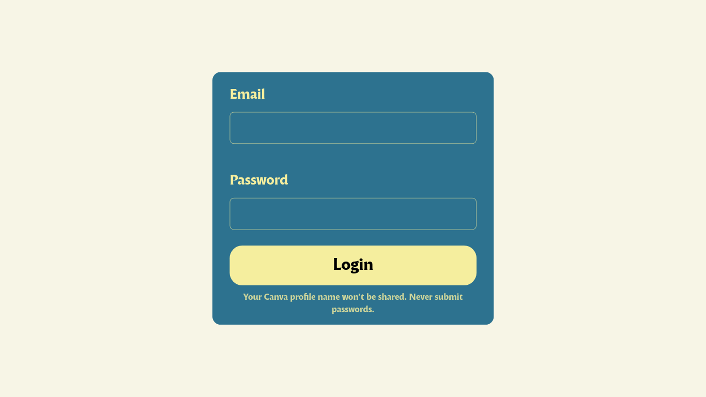
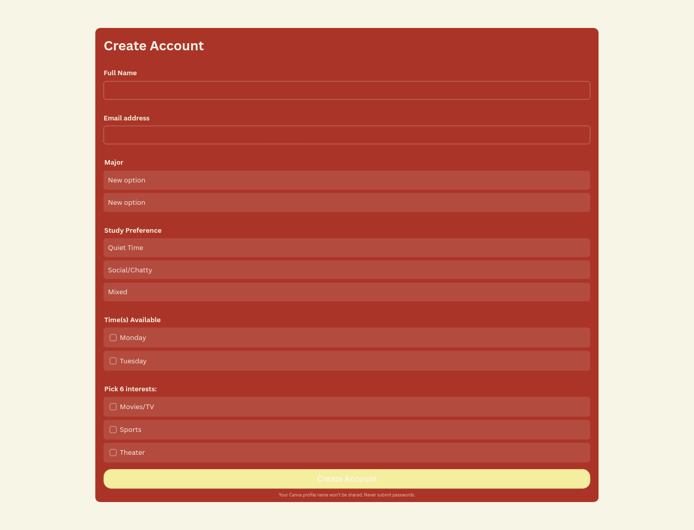
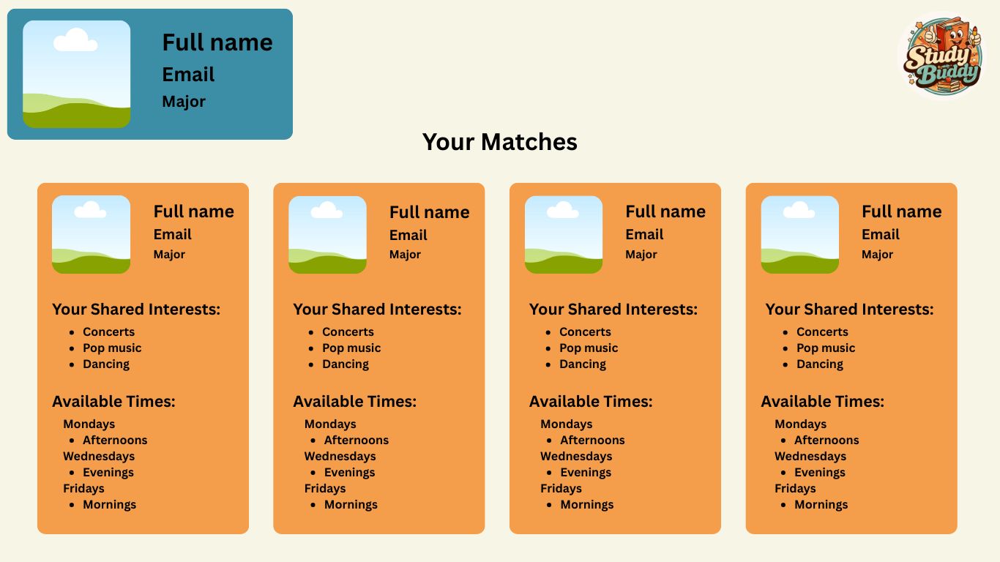

Website Logo

Style Guide
Color Palette
| Primary | Secondary | Background Color | Accent 2 | Accent 3 | Accent 4 |
|---|---|---|---|---|---|
Typography
Heading Font: Leckerli One
Paragraph Font: Montserrat Alternates
Normal paragraph example
Study Buddy is a website created to help student make connections and improve their study habits.
Colored paragraph example
This website will use profiles created by students to match them with others. This matching will be done based off of their major, times avaiable to study, study type preference, and personal interests. The goal of this system is to help students make connections with each other while also promoting better study habits to improve their grades.
Wireframes
Home

Login Page

Create Account Page

Profile Home Page
